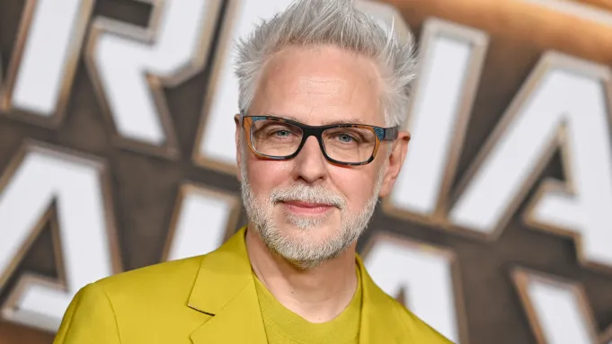

Após muita espera,o trailer finalmente está entre nós
Desde que James Gunn foi confirmado no comando da DC houve muita expectativa em seus futuros projetos, que já aparentam bem promissores
assista o trailer a seguir
Esse trailer foi um prato cheio para os fãs de quadrinhos, que há muito tempo não viam a real essência do personagem ser adpatadanos cinemas há muito tempo.
Sem contar o grande número de referência ao personagem e ao universo DC encontrados no trailer
James Gunn e seus projetos
Desde de que assumiu a liderança da DCJames Gunn têm se demonstrado bem interesado em fazer o seu universo dar certo, trazendo uma grade fidelidade aos quadrinhos
Até agora James Gunn já anunciou alguns projetos para o seu novo DCUque busca se diferenciar do conhecido MCU da empresa rival